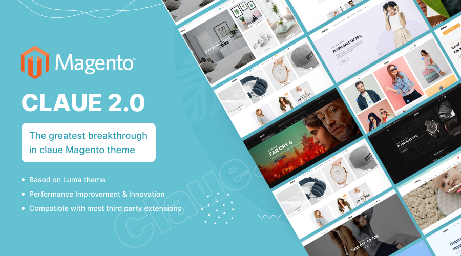

<div class="pt-9">


<div>
    <h2>Project 1.0</h2>


    <div class="panel-body" style="text-align:left; font-weight:400; font-size:16px; color:#415b5b" bis_skin_checked="1">
        <p><strong>Claue 2</strong> is the second advanced version of the Claue Magento theme that completely differentiates from its previous one. Thus, if you are using Claue version 1 and want to update to Claue
        version 2, you can only rebuild a new website no rather than updating from the old version.</p>
        <p style="font-weight:600; margin-top: 20px;">Why choose Claue version 2?. </p>
        <ul style="list-style: disc; padding-left:25px; font-style:italic; margin-bottom: 20px;">
        <li>Based on Luma Theme.</li>
        <li>Meet all standards of Magento Theme.</li>
        <li>Significant performance improvement.</li>
        <li>Compatible with most third-party extensions.</li>
        </ul>
        <p>Claue 2 is fully compatible with Magento: 2.2.x, 2.3.x, 2.4.x</p>
        <p>Compatible with PHP Versions: 7.4, 8.0, 8.1, 8.2</p>
        </div>
</div>

</div>